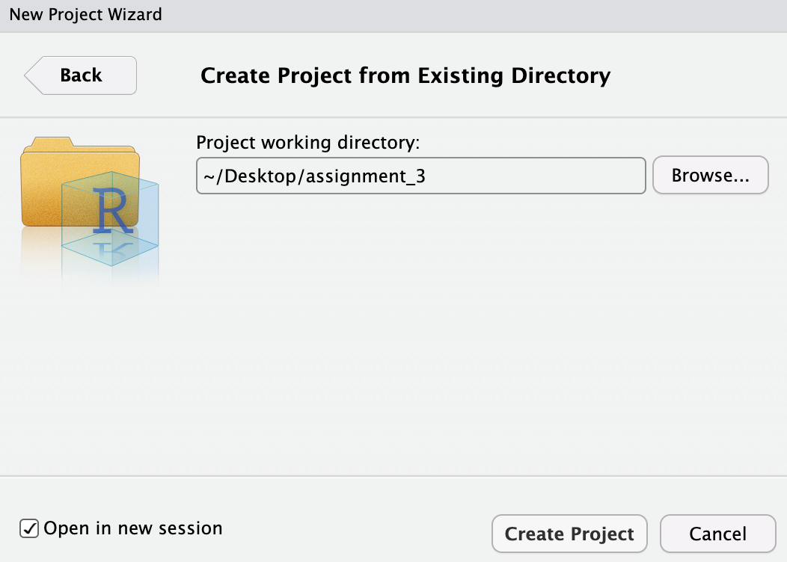
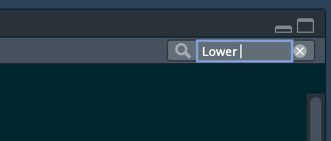
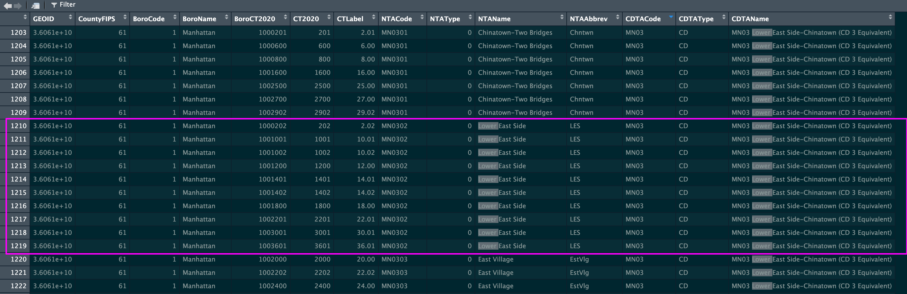
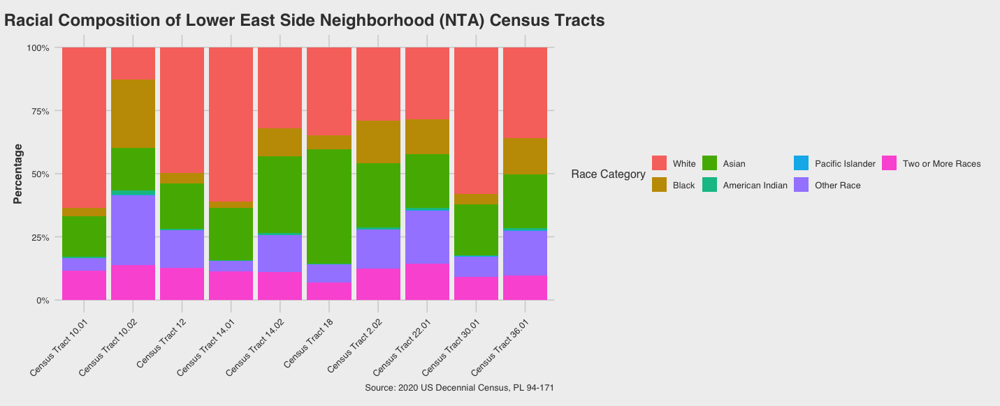

Class 3 Assignment: Working with US Census Decennial 2020 Data at the Neighborhood Level.
Fall 2025 | Instructor: Stephen Metts | PGUD 5160 - CRN 2247
Preamble
In this third week’s assignment, we will utilize the framework from Class 3 lab steps to develop an R Markdown report that features a comparative analysis of the racial composition of two NYC neighborhoods. Follow the sequence of steps below to first orient to this week’s content: lecture, materials and weekly reading(s). Once complete, move along to creating your R Markdown deliverable, making sure to upload the assignment deliverable, due Thursday, September 18th, 2025 at 11:59pm.
Week 3 Class 3 Materials:
Week 3 Class 3 Reading:
This selected journal article reading situates the US Decennial Census 2020 in historical, critical and political terms, reinforcing a myriad of reasons why a fair and transparent census taking is invaluable to modern society. The 10 quiz questions will cover the concepts covered in the article.
At 7am Friday, September 19th, the third weekly quiz will open in Canvas. Utilize the posted Class 4 Agenda to gain the quiz access code which will be posted towards the beginning of the agenda. Expect 10 questions in total that cover the reading above.
Class 3 Assignment:
Step 1:
Similar to how we started our lab_3 project directory (this is a repeat of the week 2 setup), we will first simply copy/paste the lab_3 directory at the desktop and name the new copied directory assignment_3. However, unlike week 2, we will not reuse the lab data; as part of the assignment, we will conduct analysis at the census tract level, not county leve.
Next, create a new R project, but this time instead of creating a New Directory, utilize an Existing Directory and point it to the just copied assignment_3 folder:


Run the standard getwd() before beginning assignment 3, ensuring you are within the newly created assignment_3 project directory.
Like the week 2 assignment, we will be adapting and delivering a R Markdown File as the assignment_3 deliverable. For quick reference, here is the R Markdown Cheat Sheet options for customizing syntax in your deliverable:
R Markdown Cheat Sheet: Help > Posit Cheatsheets > R Markdown Cheat Sheet
Step 2:
From within your assignment_3 project, navigate to the docs folder. This is the location in which you will first download the example R Markdown file (.rmd), and open it anew in your project. Alternatively, you can create your own R Markdown file, but the download version has some formatting set up that can be a helpful start point (as was the case for assignment_2).
To open an existing R Markdown file:
File > Open File > assignment_3 > docs > assignment_3.Rmd
To create your own R Markdown file:
File > New File > R Markdown
Next, loading, working with and saving data in the Console is NOT the same as loading, displaying and plotting data in an .Rmd file. Keep in mind that the Console is the iterative, working environment, whereas .Rmd is designed for publishing and sharing your analysis results.
So, the first step following the completion of accessing and plotting neighborhood census tract data is to first load that data that has been cleaned in the assignment_3 steps explicitly within the .Rmd environment.
We load the data as follows from within the .Rmd document. Utilize the green run button to the far right of the code block to execute the code:
Next, you will find a copy of the race composition plot for the Lower East Side (LES) census tracts in the .Rmd. Per the assignment steps, you will also create a comparison profile for another NYC neighborhood by adapting the GEOID variables to the new neighborhood and plotting the results for the comparison neighborhood. In the steps below, the primary LES census tracts are developed step by step.
Step 3:
To get started on this week’s assignment, we will utilize the race composition workflow that was done in lab_3, but adapt it to neighborhood level census tracts in NYC. We will conduct the analysis first for the Lower East Side Neighborhood Tabulation Area (NTA). Once complete, the workflow is adapted to your choice of a comparison neighborhood. Essentially you will be repeating the LES plot, but for your chosen comparative NTA.
Before proceeding, make sure to load the Class 3 Assignment R Script into your working session. Make sure to load in your required libraries at the top of the scrip, and if needed you can reset your API key, although its unlikely you would need to do this as we set the key to install = TRUE for ongoing usage in your R installation.
As you finalize your code and bring it into your .Rmd submission document, all components - the libraries, the data and the plotting code - need to exist in the .Rmd environment as it operates separate of your Console environment. The .Rmd file will have the necessary libraries and the code example for LES supplied, but you will need to supply both the adapted code and data for the comparison NTA.
In order to determine how New York City designates a neighborhood boundary, we utilize the Neighborhood Tabulation Area (NTA) specifications. The ‘equivalency’ file gives a listing of the US Census tract components that compose each unique neighborhood. We declare these tracts in our code, and then call these specific tracts from the US Census Decennial 2020 endpoint with the tidycensus package.
The equivalency files can be accessed HERE. From this endpoint you would download the data as a .csv file.
A backup, compressed version is located at the following location:
Regardless the option you use, make sure it is uncompressed and placed into your data subdirectory:
You can then load this into your R session and then view the dataframe easily:
NTA_CT <- read.csv("~/Desktop/assignment_3/data/2020_Census_Tracts_to_2020_NTAs_and_CDTAs_Equivalency_20250903.csv")A very helpful features of View() is the search function in the upper-right of the interface. Here you can type ‘lower’ and that is going to highlight all instances of ‘lower’ in the table, including ‘Lower East Side’. This is helpful as we want to find an copy just those equivalent census tracts for the Lower East Side for the visualization of the first neighborhood before the comparison neighborhood.


NTANameThere are both NTAName and CDTAName aggregations, the second of which is more inclusive of larger areas. For our purposes in this assignment, we will stick to the more exclusive NTAName equivalency to census tracts. Note also that the current GEOID is listed in scientific notion which is not helpful for our purposes. We suppress this with options(scipen = 999)
Run scientific notation suppression and view the table again:
Now we can simply create a single vector from the table for the GEOIDs that match the NTAName ‘Lower East Side’:
Importantly, GEOIDs with tidycensus should be in the character format, so we will now convert them to character format to match the GEOID format that is returned from the tidycensus call:
You can now print this character vector of your neighborhood GEOIDs for viewing so you can check before proceeding that you have your GEOIDs correct:
Next, we declare the race variables that are needed from the US Decennial Census 2020 file:
race_vars <- c(
Total = "P1_001N",
White = "P1_003N",
Black = "P1_004N",
American_Indian = "P1_005N",
Asian = "P1_006N",
Pacific_Islander = "P1_007N",
Other_Race = "P1_008N",
Two_or_More_Races = "P1_009N"
)This declaration is then pulled into the tidycensus API call:
race_data <- get_decennial(
geography = "tract",
variables = race_vars, #Specify race variables from previous step
state = "NY",
year = 2020,
sumfile = "pl", # Specify the Redistricting Summary File
output = "wide" # Get data in a wide format
) Next, we use the %>% operator to filter all the census tracts in race_data to just those that match the character vector in les_GEOID_chr. We declare this match selection as LES_race_data:
Before plotting, we can clean up the verbose naming of the census tracts:
Finally, we create the fully cleaned dataframe in the ‘long format’; this is what will be passed to the plot and its also the dataframe that needs to be saved for reloading into the assignment .Rmd document:
LES_race_data_evaluated <- LES_race_data %>%
mutate(
White_pct = White / Total,
Black_pct = Black / Total,
American_Indian_pct = American_Indian / Total,
Asian_pct = Asian / Total,
Pacific_Islander_pct = Pacific_Islander / Total,
Other_Race_pct = Other_Race / Total,
Two_or_More_Races_pct = Two_or_More_Races / Total
) %>%
# Keep original NAME and percentage columns
select(NAME, ends_with("_pct")) %>%
# Reshape from wide to long format for plotting
pivot_longer(
cols = ends_with("_pct"),
names_to = "Race_Category",
values_to = "Percentage"
) %>%
# Clean up Race_Category only
mutate(
Race_Category = str_replace(Race_Category, "_pct", "") %>%
str_replace_all("_", " ") %>%
factor(levels = c(
"White", "Black", "Asian", "American Indian", "Pacific Islander",
"Other Race", "Two or More Races"
))
)Step 4:
In this final stage, we will develop the final visualization for the LES NTA, however its critical to now save your cleaned data first as a good practice, but most importantly so that you can load it from within your assignment .Rmd. You will also need to do this again for your comparison NTA, making sure to rename it something other than LES. Here we save it to the results subdirectory naming it LES_race_data_evaluated in the .RData extension:
save(LES_race_data_evaluated, file = "~/Desktop/assignment_3/results/LES_race_data_evaluated.RData")Next, we indeed plot the dataframe for the race composition of each census tract in the NTA (using LES, and then again the NTA of your choice). Make sure when you plot the comparison NTA that you change the title to reflect the new NTA, not LES.
ggplot(LES_race_data_evaluated, aes(x = NAME, y = Percentage, fill = Race_Category)) +
geom_bar(stat = "identity", position = "fill") +
labs(
title = "Racial Composition of Lower East Side Neighborhood (NTA) Census Tracts",
x = "Census Tract",
y = "Percentage",
fill = "Race Category",
caption = "Source: 2020 US Decennial Census, PL 94-171"
) +
scale_y_continuous(labels = scales::percent) +
theme_fivethirtyeight() + # Use a clean, readable theme
theme(
plot.title = element_text(hjust = 0.5, face = "bold"),
axis.title.y = element_text(face = "bold"),
legend.position = "right",
axis.text.x = element_text(angle = 45, hjust = 1)
)
Step 5:
In the development of your assignment 3 .Rmd, make sure to change your YAML header to your output type, author and title. In addition to the primary NTA plot for the LES, you will pick a secondary NTA and adapt the steps in the assignment script to the new NTA. Make sure to save the new NTA dataframe so that you can load it also into your .Rmd.
For your contextual writing and observations to include about the comparative nature of the two analysis NTAs, consider the following prompts to help develop your report:
- Does both the LES NTA and your chosen NTA appear as you would expect?
- What surprised you the most in NTA plots?
- Are there significant differences between the two NTAs or are they similar, or at least similar for one or particular races?
The assignment 3 submission is due to Canvas on Thursday, September 18th, 2025 at 11:59pm. The format is either a .html or .pdf document generated from your Rmd document. The pdf output is preferred; the .html output only if you are unable to get latex up and working on your machine. You will not be penalized for an .html format whatsoever - both will be accepted.
Note that when you knit your output, the .Rmd should not be removed. However, the only submission document for this week’s assignment - as was the case for assignment 2 - is either the .pdf or the .html.
The Assignment 3 R Markdown deliverable is due to Canvas on Thursday, September 18th, 2025 at 11:59pm.